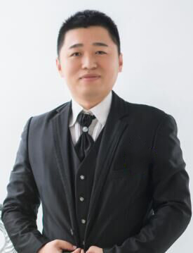

|
Kun Liu@BIT
|
 |
Kun Liu (刘坤), Ph.D.
E-mail: kunliubit@bit.edu.cn
IEEE Senior Member
北京理工大学高级专业技术岗位特聘教授计划(青年)
博士生导师
School of Automation, Beijing Institute of Technology
Beijing, China
|
Current Research Interests
Work Visiting Address
北京市海淀区中关村南大街5号自动化学院国防科技园6号楼1002.
Office 1002, 10th floor, Buliding 6, School of Automation, Beijing Institute of Technology, Beijing 100081, China.
News
I am looking for highly motivated postdocs in the related areas. Please drop me an email if you are interested.
每年招收博士或硕士研究生2-3名, 欢迎自动化、应用数学等专业学生报考; 具体方向根据个人兴趣和基础, 和导师协商确定, 也欢迎学生自己提出感兴趣的方向.
与瑞典皇家理工学院、法国国家科学院LAAS实验室等保持长期合作.
对考生的期望：有较好的数学基础, 较为流利的英语口语和写作技能, 踏实勤奋, 爱好体育锻炼.
Highlights
Collaborators
Prof. Emilia Fridman (Tel Aviv University, Israel)(PEOPLE IN CONTROL: Emilia Fridman) Prof. Karl Henrik Johansson (KTH Royal Institute of Technology, Sweden) Prof. Alexandre Seuret (LAAS CNRS, Toulouse, France) Prof. Laurentiu Hetel (CNRS CRIStAL UMR, France) Prof. Dimos V. Dimarogonas (KTH Royal Institute of Technology, Sweden) Prof. Henrik Sandberg (KTH Royal Institute of Technology, Sweden) Prof. Daoyi Dong (University of New South Wales, Australia) Prof. Anton Selivanov (The University of Sheffield, UK) Prof. André M. H. Teixeira (Uppsala University, Sweden) Prof. Farhad Farokhi (The University of Melbourne, Australia) Prof. Yuanqing Xia (Beijing Institute of Technology, China) Prof. Liying Zhao (University of Science and Technology Beijing, China)
Advice for Students
Advice for Students-论文写作
Advice for Students-基本知识点
本站总访问量次
|
{kind=link}